Undercut Racing Manager är ett gratis, webbläsarbaserat managerspel om racing. Inget att installera – skapa ett konto och sätt ihop ditt drömlag på några minuter.
Bygg ditt lag. Vinn mästerskapet.
Ange ditt användarnamn eller din e-postadress så skickar vi en länk för att välja ett nytt lösenord.
Du öppnar länken i mailet på den här enheten så tar appen dig automatiskt vidare till nästa steg här.
Kontot - hittades. Ange ditt nya lösenord.
Det senaste som hänt ditt lag – vinster, pallplatser, poles, värvningar, sparkade personer, mästerskap och annat viktigt.
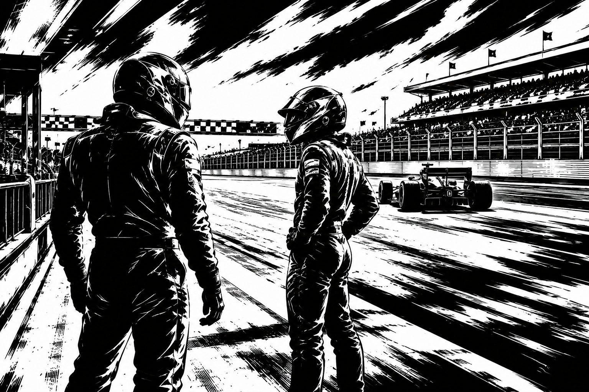
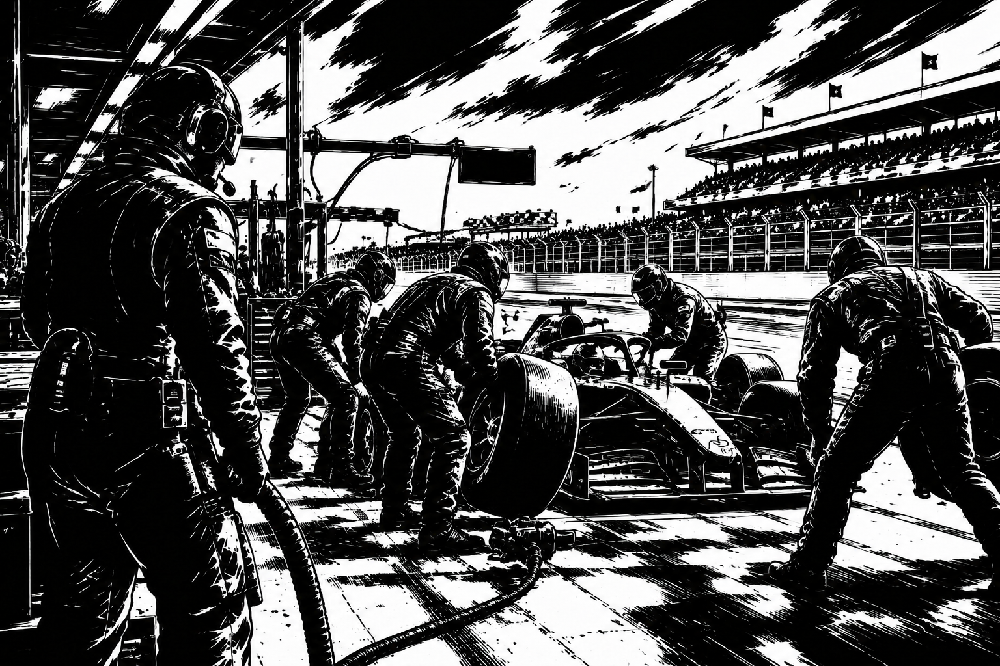
Antal anställda: 0 / 10 st
Veckolön totalt: 0 kr (100 000 kr / mekaniker)
Totalförmåga: 10
Varje mekaniker är tilldelad en av lagets två bilar. Klicka på ett namn för profil och full förmågeprofil.
| Namn | Ålder | Nat. | Bil | Förmåga | Rekryterad | Chef |
|---|
Antal anställda: 0 / 10 st
Veckolön totalt: 0 kr (100 000 kr / ingenjör)
Totalförmåga: 10
Varje ingenjör är tilldelad en av lagets två bilar. Klicka på ett namn för profil och full förmågeprofil.
| Namn | Ålder | Nat. | Bil | Förmåga | Rekryterad | Chef |
|---|
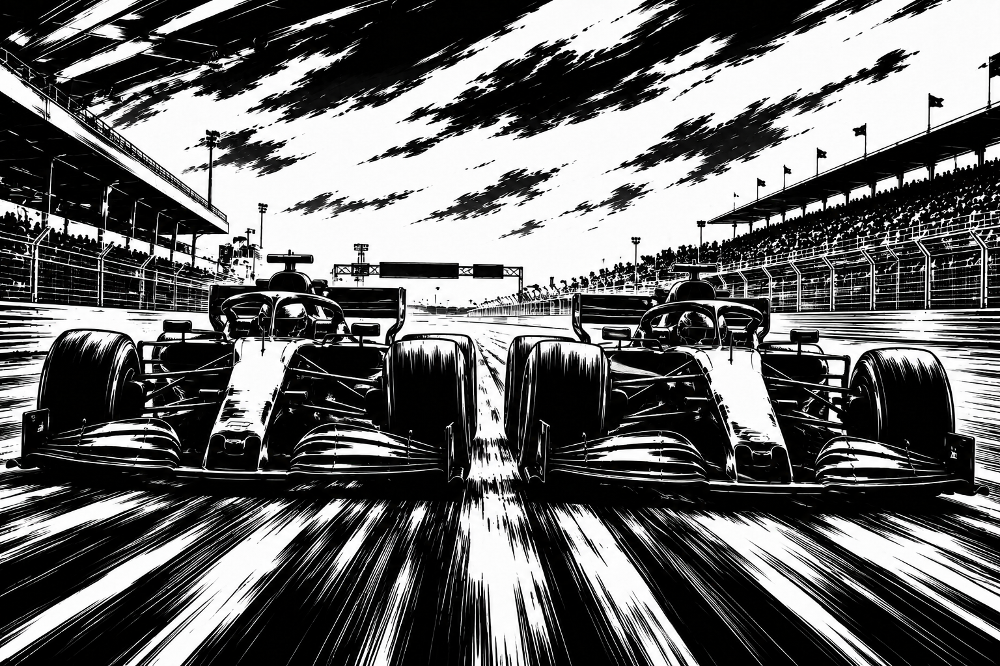
Här övervakas varje bils fem komponenter (0-100) för sig. Varje komponent bidrar på sitt eget sätt till kval och lopp – se förklaring under respektive del, och en fullständig genomgång under fliken Manual.
Antal Bilar: 2 st
Bilprestanda (snitt komponenter): - / 100
| Del | Index |
|---|
| Del | Index |
|---|
Uppgradering är billig när indexet är lågt och blir snabbt dyrare ju högre indexet redan är – kostnaden stiger med kvadraten på indexet (+5 index per uppgradering, max 100). Kostnaden dras direkt, men det tar 1 dag innan den nya nivån slår igenom (komponenten visar "Uppgraderas..." tills då). Se fliken Manual för en fullständig förklaring. Skadade komponenter repareras istället direkt till sitt ursprungliga värde för en fast kostnad på 100 000 kr. Bil 1 och Bil 2 uppgraderas och repareras helt separat.
Motor: ger extra fart på raksträckor – störst effekt i loppet (och särskilt på långa banor), mindre men märkbar effekt i kvalet.
Aerodynamik: ger bättre grepp i kurvor – störst effekt i kvalet (en enskild snabb runda), och skalar upp ytterligare på banor med många kurvor.
Däck: avgör hur bilen håller pace genom ett helt lopp och samverkar med depåstoppets däckstrategi – påverkar bara loppet (inte kvalet), och betyder mer ju fler kurvor banan har (slitage).
Växellåda: ger snabba, pålitliga växlingar – ett litet men jämnt bidrag i både kval och lopp.
Chassi: allmän balans och stabilitet – ett stadigt bidrag i både kval och lopp.
Skador: 0-3 bilar i fältet skadas i varje race. En skada sänker en slumpad komponent med 10-70% av dess värde tills den reparerats (se fliken Bilar ovan). Förare med en Aggressiv körstil kör mer på gränsen och drabbas betydligt oftare än Balanserade och Defensiva förare.
-
| Race | Bana | Din placering | Deras placering | Resultat |
|---|
| Race | Bana | Bil | Förare | Placering | Poäng |
|---|
Nästa träningsrace: -. Välj vilken förmåga varje förare ska fokusera på – alla förmågor utom Erfarenhet kan tränas. Föraren tränar den valda förmågan i träningsracet, och hur mycket den förbättras avgörs av hur föraren presterar. Ingen förare = ingen träning den veckan. Träningsuppdateringen sker automatiskt direkt efter avslutat träningsrace.
Anmäl enskilda mekaniker/ingenjörer till veckans träningsrace nedan (gratis, samma princip som förarna) – resultatet beror på hur personen presterar i racet, men slår igenom först vid söndagens ekonomiuppdatering.
Ring dina scouter för att få tips om lovande juniorförare under 20 år. Varje samtal kostar 500 000 kr och ger ett nytt prospekt till ditt Juniorprogram. När ett prospekt fyller 20 år är hen redo att skrivas till laget som reservförare.
Dina scoutade prospekt. Förmågan är scoutens bedömning redan idag – den fortsätter utvecklas precis som för alla andra förare i spelet.
| Namn | Ålder | Nat. | Stil | Förmåga (scoutad) | Status |
|---|
Sök bland förare och personal hos andra lag i din division, samt fria förare/personal. Har personen en friköpsklausul kan du köpa loss hen direkt från personens profil. Ett lag får bara värva EN person per lag och säsong (gäller både förare och personal), och värvning från ett konkurrerande stall sänker lagets moral något.
Välj en förmåga per juniorprospekt. Den valda förmågan ökar med +1 poäng varje vecka (vid söndagens ekonomiuppdatering) fram till och med den säsong prospektet fyller 20 år och blir redo att skrivas till lagets reservbänk. Se fliken Manual för hela systemet (max antal prospekt, åldersfördelning, scoutbegränsning m.m.).
| Namn | Ålder | Förmåga | Förbereds inom |
|---|
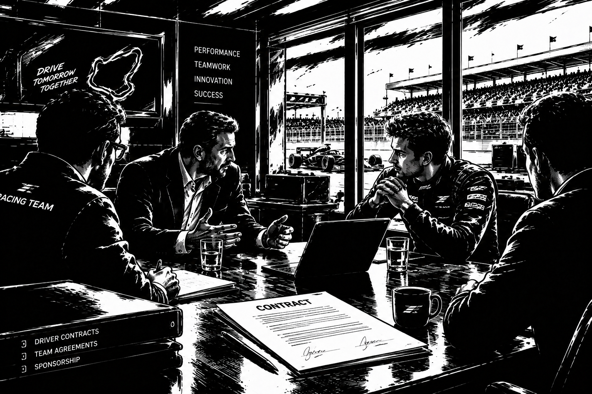
Alla kontrakt för ditt lag – förare, mekaniker, ingenjörer och Team Principal. Klicka på ett namn för att öppna personens profil och hantera kontraktet där (förhandla, förläng eller säg upp). Team Principal förhandlas direkt i tabellen nedan.
| Namn | Roll | Rating | Lön / vecka | Säsonger kvar | Friköpsklausul |
|---|
Placering i laget: -
Körstil: -
Popularitet: - / 100
Rekryterad: -
Högsta bud: -
Auktionen avslutas: -
Välj vilken av lagets bilar personen ska tillhöra. Personalen som tillhör en bil påverkar den bilens resultat i loppet.
Flytta föraren till en ledig plats i laget. Är platsen redan upptagen byter de två förarna plats.
Förarens placering bland ALLA förare i spelet (aktiva och pensionerade) i varje kategori.
| Kategori | Värde | Placering |
|---|
De senaste marknadsaffärerna för liknande personer (samma roll, med hänsyn till förmåga, ålder, lön och kontraktslängd), mest lika först – ger en snabb bild av marknadsvärdet.
| Namn | Ålder | Förmåga | Lön / vecka | Säsonger kvar | Pris | Från | Till | Datum |
|---|
Inga tidigare marknadsaffärer för liknande personer hittades ännu.
Slutplacering och intjänade poäng, säsong för säsong (senaste säsongen överst).
| Säsong | Placering | Poäng |
|---|
Säsong för säsong: lag, liga och resultat. Historiken börjar fyllas på från och med nästa säsongsskifte.
| Säsong | Lag | Liga | Placering | Lopp | Vinster | Pall | Poäng | Titel |
|---|
Säsong för säsong: lag, liga och lagets resultat den säsongen. Historiken börjar fyllas på från och med nästa säsongsskifte.
| Säsong | Lag | Liga | Placering | Poäng | Titel |
|---|
Lag du har friköpt spelare eller personal från de senaste 10 säsongerna.
| Säsong | Lag | Anledning |
|---|
Inga rivaler än – du har inte friköpt någon spelare eller personal från ett annat lag.
Ditt lags placering säsong för säsong. Historiken börjar fyllas på från och med nästa säsongsskifte.
| Säsong | Liga | Placering | Poäng | Titel |
|---|
Historiken börjar fyllas på från och med nästa säsongsskifte.
Team Principalens tre attribut påverkar laget direkt: Förhandling höjer chansen att lyckas i lönförhandlingar, Sponsring höjer storleken på sponsorerbjudanden, och Moral höjer lagets långsiktiga moral-jämviktsläge.
Högsta bud: -
Auktionen avslutas: -
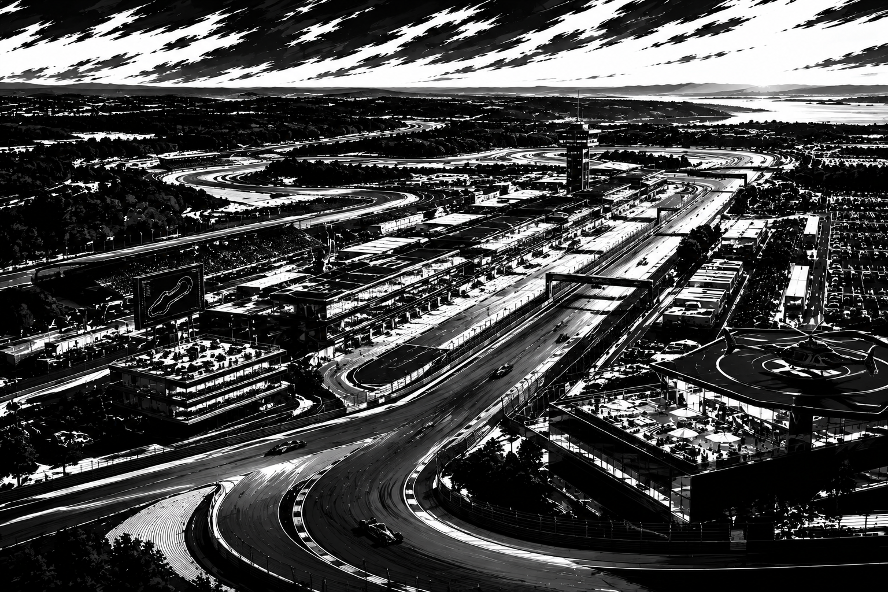
Banans namn: -
Längd: - km | Kurvor: - st
Svårighetsgrad: - / 10
Varje bana har unika förutsättningar i form av banlängd och antal kurvor som påverkar hur mycket motor, aerodynamik och däck betyder i just det racet.
| Arena | Lag | Division | Längd | Kurvor | Svårighet | Historiskt bästa |
|---|
Döp om din hemmabana till vad du vill (Kostnad: 100 000 kr).
Bygg om din hemmabana så att den passar din bil/förare – fler kurvor gynnar aerodynamik/däck/handling, en längre bana gynnar motor (men kräver mer bränsle, se Race-fliken). Gratis, men gäller bara FRAMTIDA race (redan kvalade/körda race påverkas aldrig). Om ditt lag redan är värd för ett kommande, ännu ej kvalat race i år uppdateras det racet direkt – annars gäller ändringen från nästa säsong.
Svårighetsgrad med dessa värden: - / 10
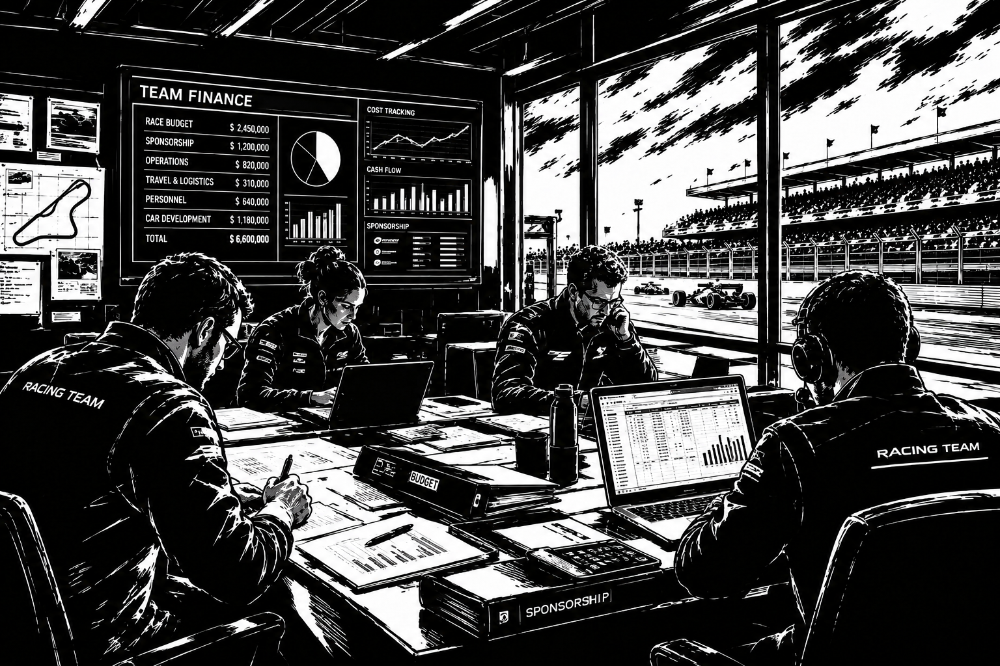
Nuvarande saldo
-
Budget: -
All ekonomi (sponsorintäkt, merchandise, löner, underhåll) uppdateras automatiskt varje söndag kl 20.00. Nästa ekonomiuppdatering: -.
-
Senaste transaktionerna på ditt konto.
| Vecka | Händelse | Belopp |
|---|
Kassans saldo efter varje veckouppdatering (senaste 20 veckorna).
Senaste 10 veckorna.
Alla veckor sedan spelstart, senaste överst.
| Säsong | Vecka | Sponsor | Merch | Löner | Underhåll | Netto | Saldo efter |
|---|
Alla veckor i en säsong summerade.
| Säsong | Sponsor | Merch | Löner | Underhåll | Netto totalt |
|---|
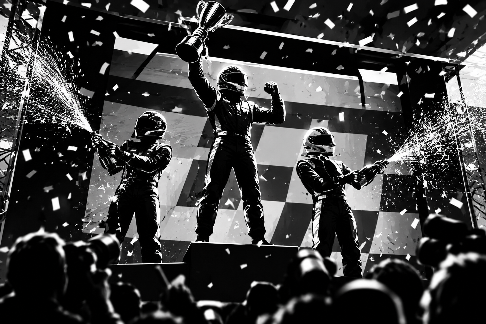
Välj vilken serie/grupp du vill se. 10 lag per grupp, vardera med två bilar.
-
| Pl | Stall | Antal race | Poäng | Bil 1 | Bil 2 | Form |
|---|
Diskutera med de andra lagen i den serie du just nu tittar på ovan. Inläggen sparas per serie som en chattlogg.
Vinnaren av varje division koras till mästare vid säsongsslutet, precis innan poängen nollställs och upp-/nedflyttningen genomförs.
| Säsong | Mästare | Poäng |
|---|
| Säsong | Mästare | Poäng |
|---|
Räknar mästerskap i alla divisioner. Kolumnen "Undercut Masters League" visar hur många av dessa som var just Undercut Masters League-titlar.
| # | Stall | Undercut Masters League | Mästerskap totalt |
|---|
Rankat efter karriärpoäng, bland alla förare som just nu tävlar i serierna samt alla Legends.
| # | Förare | Lopp | Vinster | Pallplatser | Poäng | Poles | Snabbaste varv | DNF | Mästerskap |
|---|
Snabbaste depåstopp som någonsin körts, av alla lag i alla divisioner.
| # | Förare | Lag | Vinster |
|---|
| # | Förare | Lag | Pallplatser |
|---|
| # | Förare | Lag | Poles |
|---|
| # | Förare | Lag | Snabbaste varv |
|---|
Antal race där föraren bröt loppet utan att bli klassad.
| # | Förare | Lag | DNF |
|---|
Varje lags samlade historik, oavsett vilken division laget tävlar i just nu. Nollställs aldrig av säsongsskiftet.
| # | Stall | Lopp | Vinster | Pallplatser | Poäng | Poles | Mästerskap | DNF |
|---|
Långsiktiga mål för ditt lag – låsta achievements visas nedtonade. Se fliken Manual för hur varje mål räknas.
Förare som spelat för ditt lag och pensionerats vid 40 års ålder, med hela karriärstatistiken bevarad – istället för att bara försvinna ur spelet.
-
All-time-statistik för serien/gruppen du tittar på just nu, genom alla säsonger.
Serie: -
| # | Lag | Titlar |
|---|
| # | Säsong | Lag | Poäng |
|---|
Välj vilken serie/grupp du vill titta på. Påverkar Serietabell, Seriestatistik och Forum.
Träningsracet körs automatiskt måndagar kl 20.00, kvalet till varje race körs automatiskt onsdagar kl 20.00, racet körs automatiskt fredagar kl 20.00, och ekonomin uppdateras automatiskt söndagar kl 20.00. Klicka på ett race för att se startuppställningen eller resultatet.
| Race | Datum | Bana / Värdlag | Status |
|---|
Välj en tidigare säsong för att se dess sluttabell för serien/gruppen du tittar på.
| Pl | Stall | Poäng |
|---|
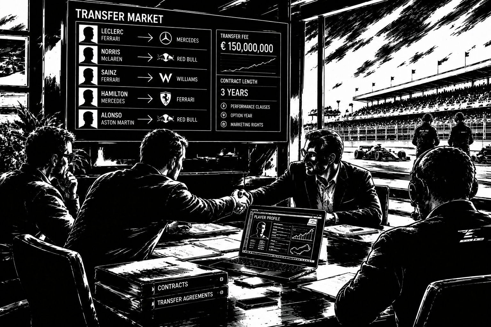
Vill du sälja någon ur din egen trupp? Öppna personens profil via Lagsidan och klicka på "Lägg ut till försäljning".
Personer vars kontrakt löpt ut och som inte fick något bud under sin tid på transferlistan. Först till kvarn – ingen budgivning, skriv kontrakt direkt.
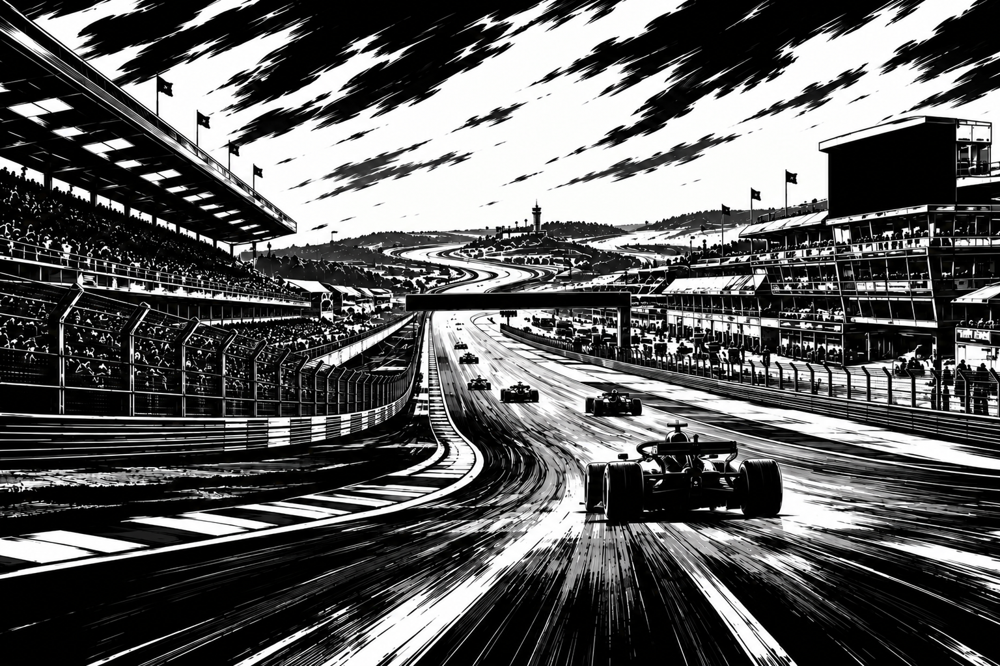
Alla race denna säsong – kommande och genomförda. Klicka på ett race för att öppna dess egen sida (taktik/order eller resultat).
| Kval / Race | Datum | Bana / Värdlag | Svårighet | Status |
|---|
| Pl | Stall | Bil | Förare | Start | Poäng | Prestation | Depåstrategi | Depåtid | Bränsle |
|---|
Värdlag: -
Banförutsättningar: - km, - kurvor
Svårighetsgrad: - / 10
-
-
| Pos | Stall | Bil | Förare |
|---|
Ge order till laget inför kvalet och racet. Valen gäller båda dina bilar. Du kan lägga och ändra order för valfritt kommande race i säsongen – välj race nedan.
-
-
Kvalordern är sparad.
-
-
-
Race-ordern är sparad.
| Pos | Stall | Bil | Förare | Bästa kvaltid | Prestation |
|---|
Värva en ny förare direkt till reservbänken (utanför transfermarknaden): -
Kostnad: 100 000 kr
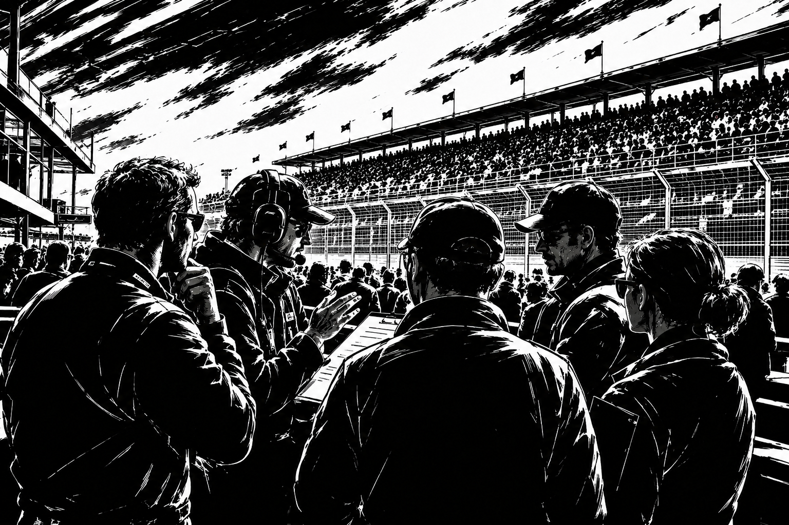
Ny i Undercut Racing Manager? Börja med Kom igång. Klicka på en rubrik nedan för att hoppa direkt till avsnittet.
Kom igång
Trupp & tävling
Utveckling
Du leder ditt eget racinglag genom fyra divisioner. Du anställer förare, mekaniker och ingenjörer, uppgraderar bilen, sätter din taktik inför tävling – och spelet sköter resten automatiskt varje vecka enligt schemat nedan.
Veckoschemat (sker helt automatiskt):
Så hittar du rätt i navigationen:
Truppregler: Varje lag har exakt 2 aktiva bilar och egna förare till varje bil ("Bil 1" och "Bil 2"), samt upp till 10 reservförare gemensamma för laget. Du kan anställa upp till 10 mekaniker och 10 ingenjörer per lag (kostar 100 000 kr att anställa samt 100 000 kr i veckolön per anställd). Varje mekaniker och ingenjör tilldelas en av lagets två bilar – och du väljer själv vilken bil, via personens profilsida.
Sparka personal: Från din egen personals profilsida kan du när som helst sparka personen – hen lämnar laget omedelbart utan ersättning (en förare i Bil 1/Bil 2 ersätts av reservföraren om en sådan finns). Är personen samtidigt utlagd till försäljning avbryts auktionen.
Namn & nationalitet: Alla förare, mekaniker, ingenjörer och Team Principals i spelet är män, men kan komma från vilken som helst av spelets nationaliteter (Sverige, Italien, Tyskland, Frankrike, Spanien, Storbritannien, Nederländerna, Finland, Brasilien, USA, Japan, Australien, Belgien, Österrike, Monaco, Mexiko, Kanada, Danmark, Norge och Schweiz) – namnet matchar personens nationalitet.
Alla lag (ditt eget och alla motståndare) visas på samma sorts Lagsida, med underflikarna Översikt, Förare, Mekaniker och Ingenjör. Klicka på namnet på vilken förare, mekaniker eller ingenjör som helst – i din egen trupp, hos en motståndare, eller på transfermarknaden – för att öppna personens profilsida som en undersida till Lagsidan. Där visas ålder, nationalitet, alla förmågor, körstil (för förare), vilken bil personen tillhör och rekryteringsdatum. Är personen din egen kan du därifrån lägga ut personen till försäljning, sparka personen, eller (för mekaniker/ingenjörer) flytta personen mellan Bil 1 och Bil 2.
På din egen Lagsida → underfliken Översikt finns två extra genvägar: knappen Rivaler visar en lista över lag du har frikopt förare eller personal från via en friköpsklausul de senaste 10 säsongerna, med en kort motivering per rad, och länken Karriärhistorik visar ditt eget lags placering säsong för säsong genom hela din karriär.
Säsonger & åldrande: En säsong består av 10 veckor (10 race). Efter varje avslutad säsong fyller alla i spelet år – det gäller förare, mekaniker och ingenjörer i samtliga lag, inte bara ditt eget – och poängen i alla tabeller nollställs inför den nya säsongen. Se avsnittet Pension & åldrande för pensionsåldrar och hur förmågan förändras över tid.
Förare: Förare har en slumpmässigt tilldelad körstil (Aggressiv, Defensiv eller Balanserad) och startar vid 20 års ålder. Körstilen påverkar inte bara racet utan även risken för skador – se Skador, ekonomi & depåstopp.
Racingförmåga per bil: Varje bil får sitt EGET race-resultat. En bils prestation är ett vägt snitt av förarens presterade förmåga och förmågan hos just den bilens tilldelade mekaniker och ingenjörer (föraren väger 10 gånger så tungt som mekanikernas snitt respektive ingenjörernas snitt, dvs. 10-1-1). Till detta läggs komponentbidraget från just den bilens egna komponenter (se fliken Bilar), depåstoppet och lagmoralen.
Förarprestation: Ingen förare kör på topp varje gång. Inför varje kval och varje lopp slumpas en prestationsnivå fram för respektive förare på mellan 70% och 100% av dennes förmåga.
Komponenternas bidrag i racet: Bilens fem komponenter (Däck, Motor, Aerodynamik, Växellåda, Chassi) bidrar alla olika mycket till kval respektive lopp, och effekten skalar även med banans egenskaper. Motorn ger mest i loppet (extra på långa banor), aerodynamiken ger mest i kvalet (extra på kurviga banor), däcken avgör hur bra bilen håller pace genom loppet (viktigare ju fler kurvor), medan växellåda och chassi ger ett jämnt bidrag i både kval och lopp. Se fliken Bilar för en komponent-för-komponent-förklaring – där uppgraderar och reparerar du Bil 1 och Bil 2 helt separat.
Poäng per bil: Varje race tävlar alla bilar (två per lag) individellt om startposition och placering. De 10 bästa bilarna i loppet får poäng enligt 25-18-15-12-10-8-6-4-2-1. Lagets totalpoäng är summan av vad de båda bilarna tar in, och serietabellen visar hur mycket VARDERA bil (Bil 1 / Bil 2) har bidragit med under säsongen.
Tävlingsregler mellan säsonger: Efter varje avslutad säsong träder ett nytt reglemente i kraft: en av bilens fem komponenter (Däck, Motor, Aerodynamik, Växellåda, Chassi – i den ordningen) halveras för ALLA lag i spelet, ditt eget såväl som samtliga AI-lag. Detta upprepas i ett rullande 5-säsongersschema: Säsong 2 straffar Däck, Säsong 3 Motor, Säsong 4 Aerodynamik, Säsong 5 Växellåda, Säsong 6 Chassi, Säsong 7 Däck igen, och så vidare. Regeln tillämpas EXAKT en gång per säsongsnummer och rör aldrig redan spelade säsonger i efterhand – den första säsongen (Säsong 1) hinner aldrig straffas, eftersom regeln bygger på att en säsong faktiskt har avslutats innan den kan aktiveras. Du meddelas i Nyheter och Inkorgen varje gång en ny regel träder i kraft, och den senaste tillämpade regeln visas alltid under fliken Race.
Transfermarknad: Under fliken "Marknad" listas alla pågående auktioner. Du kan lägga ut din egen förare, mekaniker eller ingenjör till försäljning från personens profilsida – auktionen pågår då i exakt 7 dagar. Alla lag i serierna (inklusive AI-lagen) kan lägga bud på varandras personal, både från Marknad-fliken och direkt från personens profilsida. Du kan aldrig buda på din egen notering. När deadline passeras går personen till den som lagt högst bud: säljer du med vinst läggs pengarna till din budget, och köper du någon dras kostnaden från din budget (så länge du har råd och plats i truppen när auktionen avgörs).
Serier & Seriepyramiden: Spelet har fem nivåer: Undercut Masters League (1 grupp, 10 lag), Division 2 (2 grupper à 10 lag), Division 3 (4 grupper à 10 lag), Division 4 (8 grupper à 10 lag) och Division 5 (16 grupper à 10 lag) – totalt 310 lag. Alla grupper fylls med AI-lag som har egna förare, mekaniker, ingenjörer, åldrar, nationaliteter, komponenter och hemmabanor. Som ny spelare tar du över ett datorstyrt lags plats i Division 4 – finns inget datorstyrt lag där blir det Division 5 osv., aldrig Division 3 eller högre. Du kan klicka på vilket lag som helst i tabellen för att inspektera deras Lagsida, bil för bil.
Upp- och nedflyttning: När en säsong på 10 race är färdig flyttas i varje grupp (utom Undercut Masters League) 1:an upp till divisionen ovanför. Dessutom går divisionens bästa 2:or upp – lika många som det finns grupper i divisionen ovanför (1 från Division 2, 2 från Division 3, 4 från Division 4 och 8 från Division 5). Tvåorna rankas efter poäng, och vid lika poäng avgör den bästa bilens poäng. I varje grupp (utom i Division 5, som är lägsta nivån) flyttas de 3 sämsta lagen ner till divisionen under, i första hand till de två grupper som är kopplade till just den gruppen. Det gör att antalet lag i varje grupp alltid förblir 10. Aktuell ställning för tvåorna ser du under Serie → Serietabell → Bästa 2:or.
Banor & Race: Varje säsong består av 10 race där lag i samma grupp turas om att vara värdar på sina hemmabanor. Banlängd och antal kurvor påverkar hur mycket varje komponent betyder i just det racet.
Veckoschema: Varje vecka följer samma cykel: måndag kl 20.00 körs träningsracet, onsdag kl 20.00 körs kvalet, fredag kl 20.00 körs själva racet, och söndag kl 20.00 uppdateras ekonomin. Allt sker automatiskt av spelet när klockan slår – det finns ingen knapp för att köra något av detta själv.
Hemmabana & banrekord: Under fliken Arena kan du gratis konfigurera om din egen hemmabanas antal kurvor (5-20) och längd (2,0-8,0 km) samt döpa om den (100 000 kr) – ändringen gäller bara framtida, ännu inte kvalade race. Fler kurvor gynnar aerodynamik/däck/handling, en längre bana gynnar motorn men kräver mer bränsle. Varje arena har ett eget banrekord (snabbaste genomförda race på just den banan, oavsett vilket lag som körde det), synligt när du tittar på laget som är värd.
Transferhistorik: Under fliken Marknad hittar du en logg över alla genomförda köp och försäljningar i serierna (vem som såldes, från och till vilket lag, samt slutpriset) – det är den listan som avgörs av auktionerna beskrivna ovan.
Egenskaper (0-100): Varje förare, mekaniker och ingenjör har fem individuella egenskaper på 0-100, och personens "Förmåga" är genomsnittet av dessa fem. Förare har Erfarenhet, Snabbhet, Däckhantering, Försvar och Lagförmåga. Mekaniker har Erfarenhet, Motorkunskap, Snabbhet, Press och Lagförmåga. Ingenjörer har Erfarenhet, Taktik, Snabbhet, Press och Lagförmåga. Alla egenskaper visas i personens profil under Lagsidan (klicka på namnet).
Erfarenhet: Erfarenhet går inte att träna. Den växer istället automatiskt med 5 poäng varje gång personen fyller år (en gång per avslutad säsong för alla i spelet). En förare börjar alltid på Erfarenhet 10 vid 20 års ålder, och samma grundprincip används för mekaniker och ingenjörer.
Träningsflik & träningsrace: Under Lagsidan → underfliken "Träning" väljer du, för var och en av dina förare, vilken förmåga (Snabbhet, Däckhantering, Försvar eller Lagförmåga – allt utom Erfarenhet) föraren ska fokusera på inför veckan. Varje måndag kl 20.00 körs automatiskt ett träningsrace för de förare som är anmälda (valt en förmåga). Hur mycket förmågan förbättras (1-5 poäng) avgörs av hur föraren presterar i träningsracet, och uppdateringen sker direkt när träningsracet är klart, med ett kort referat under samma underflik. Mekaniker och ingenjörer tränas istället direkt från deras sida under Lagsidan mot en fast kostnad (80 000 kr / 90 000 kr) där du väljer vilken förmåga som ska förbättras (+3 till alla i teamet, allt utom Erfarenhet).
Skador & reparation: Efter varje avslutat race skadas slumpmässigt 0-3 bilar bland de tävlande lagen (ibland alltså ingen alls). En skada slår mot en av bilens fem komponenter (Däck, Motor, Aerodynamik, Växellåda eller Chassi) och sänker den med 10-70% av dess nuvarande värde – permanent, tills du reparerar. En skadad komponent syns med en varningsmarkering under fliken Bilar (på just den bil den drabbade), och du reparerar den till sitt ursprungliga värde för en fast kostnad på 100 000 kr, oavsett hur högt indexet var (till skillnad från vanlig uppgradering, se nedan). Körstilen spelar roll: en förare med Aggressiv körstil kör mer på gränsen och löper väsentligt större risk att bilen skadas än förare med Balanserad eller Defensiv stil.
Uppgraderingskostnad – billigt i början, dyrt i toppen: Varje uppgradering under fliken Bilar höjer komponentens index med 5 (upp till max 100), och priset räknas ut från indexet innan uppgraderingen enligt formeln 20 000 kr + index² × 30. I praktiken betyder det att kostnaden växer med kvadraten på indexet: att uppgradera en nästan obearbetad komponent (index 0) kostar bara 20 000 kr, vid index 50 kostar det 95 000 kr, och strax innan en komponent når maxvärdet 100 (index 95) kostar det hela 290 750 kr. Det lönar sig alltså nästan alltid att bygga upp lagets svagaste komponenter innan man pressar en redan stark komponent ännu högre. Uppgraderingsknappen under fliken Bilar visar alltid exakt vad nästa steg kostar, och du får en kontrollfråga att bekräfta innan pengarna dras. Varje uppgradering tar 1 dag: kostnaden dras direkt när du bekräftar, men komponenten visar "Uppgraderas..." och håller sitt gamla index tills dagen har gått, då den nya nivån slår igenom automatiskt (du behöver inte göra något mer). En komponent kan bara ha en uppgradering i kön åt gången – du måste vänta färdigt (eller vänta ut en skada som inträffar under tiden) innan du kan starta nästa uppgradering på samma komponent.
Ekonomiuppdatering (varje söndag kl 20.00): Varje söndag får ditt lag – liksom alla andra lag i serierna – en sponsorintäkt och intäkter från försäljning av merchandise, utöver personalens löner och fast fabriksunderhåll (30 000 kr). Så länge du inte har ett aktivt sponsoravtal (se Sponsoravtal) slumpas sponsorintäkten fram utifrån vilken division du tävlar i just nu – högre division ger ett högre snitt. Merchandiseintäkten slumpas alltid fram på samma sätt men skalas dessutom av dina två förares snittpopularitet (se Popularitet & Merchandise). Ingen av intäkterna kan någonsin överstiga 1 000 000 kr per vecka. Negativ budget kostar ränta: så länge ditt lags budget är under 0 kr dras dessutom 5% av det negativa saldot i ränta varje vecka (syns som "Lånränta" i veckans ekonomi) – ytterligare ett skäl att hålla koll på budgeten, se nästa stycke. Alla veckans siffror sparas i din ekonomiska historik, som du hittar under fliken Ekonomi → Ekonomisk historik: där ser du både en vecka-för-vecka-lista över tidigare veckor och en sammanställning av alla veckor i varje säsong.
Negativ budget – begränsningar (inte konkurs): Ditt lag kan aldrig gå i konkurs eller tvingas börja om från noll, oavsett hur negativ budgeten blir. Så länge budgeten är under 0 kr blir laget istället kraftigt begränsat: du kan inte köpa eller värva spelare/personal (varken via marknaden, fria agenter eller friköpsklausuler), erbjuda eller skriva nya kontrakt (inklusive kontraktsförlängningar och att skriva upp juniorprospekt), uppgradera eller reparera bilen, ringa scouterna, träna personal, eller på annat sätt ta på dig nya kostnader (t.ex. arenauppgradering eller att byta namn på arenan). Löner, underhåll och lånränta dras dock som vanligt varje vecka. Sälj personal, ta ett lån eller vänta in nästa ekonomiuppdatering för att ta dig tillbaka över 0 kr och få tillbaka full handlingsfrihet.
Depåstopp & däckstrategi: Varje bil gör ett depåstopp under loppet med en slumpad däckstrategi (till exempel 1-stopp offensiv, 2-stopp balanserad eller 1-stopp defensiv), och detta visas som en egen kolumn i loppresultatet. Hur bra depåstoppet går ger ett tillägg till bilens poäng i loppet, och det är dina ingenjörer som avgör hur stort detta tillägg blir – ju högre snittförmåga dina ingenjörer på den bilen har, desto bättre depåstopp och desto större bonus. Bilens däckkomponent samverkar också med strategin: bättre däck gör att en offensivare strategi lönar sig mer. Depåstoppet samverkar dessutom med däckvalet du gör i Taktikgenomgången (se Taktikgenomgång) – ju bättre ingenjörer, desto mer kompenserar depåstoppet för ett hårt däckvals nackdel i loppet.
Under fliken Ekonomi → Sponsoravtal kan du teckna ett fast sponsoravtal istället för att förlita dig på den slumpade sponsorintäkten (se Skador, ekonomi & depåstopp). Så fort du inte har ett aktivt avtal visas tre erbjudanden med olika profil: Trygg (högt grundbelopp per vecka, låga bonusar), Balanserad (jämn mix) och Risk (lågt grundbelopp, höga bonusar om laget presterar). Varje erbjudande har ett fast grundbelopp per vecka som ersätter den slumpade sponsorintäkten, plus bonusklausuler som betalas ut per pallplats, per vinst och vid mästerskapstitel. Ditt Team Principals sponsringsskicklighet påverkar grundbeloppet i alla tre erbjudanden.
Ett tecknat sponsoravtal löper alltid en hel säsong (10 race) och kan inte sägas upp i förtid – du får teckna ett nytt först när det löpt ut. Du kan bara ha ett sponsoravtal aktivt åt gången. Så länge avtalet löper visas det under Ekonomi → Sponsoravtal tillsammans med hur många veckor som återstår.
Enskilt race: Laget får prispengar per poäng som bilarna kör in i varje race: 5 000 kr/poäng i Undercut Masters League, 3 500 kr i Division 2, 2 000 kr i Division 3, 1 000 kr i Division 4 och 600 kr i Division 5. Har du ett sponsoravtal tillkommer sponsorbonusar (pall- och vinstbonus, per bil). Förarnas kontraktsbonusar (pall-, vinst- och poängbonus) betalas däremot ut till föraren och är en kostnad för laget. Allt bokas direkt efter målgång och syns i Kontoutdraget.
Serietabellen – prispengarnas ekonomiska träd: När säsongen är slut får varje lag prispengar utifrån sin slutplacering i serietabellen. Varje serie har 10 lag. Division 1 har 1 serie, division 2 har 2 serier, division 3 har 4 serier och så vidare – antalet serier fördubblas för varje division ner till division 10 (512 serier). Varje division har alltid samma totala prispott: 20 000 000 kr. I division 1 ligger hela potten i den enda serien. För varje division nedåt halveras potten per serie – men eftersom antalet serier samtidigt fördubblas blir divisionens totalsumma alltid densamma (halva potten × dubbelt så många serier). Inom varje serie delas potten ut till placering 1–10: 50 %, 20 %, 10 %, 7 %, 5 %, 3 %, 2 %, 1,5 %, 1 % och 0,5 % (totalt 100 %). Exempel: vinnaren i division 1 får 50 % av 20 000 000 kr = 10 000 000 kr. En serie i division 3 har 20 000 000 ÷ 4 = 5 000 000 kr, så seriesegraren där får 2 500 000 kr.
Tabell 1 – Prispott per division och serie
| Division | Serier | Pott per serie | Vinnare (50 %) | 10:e plats (0,5 %) | Totalt i divisionen |
|---|---|---|---|---|---|
| Division 1 (Undercut Masters League) | 1 | 20 000 000 kr | 10 000 000 kr | 100 000 kr | 1 × 20 000 000 = 20 000 000 kr |
| Division 2 | 2 | 10 000 000 kr | 5 000 000 kr | 50 000 kr | 2 × 10 000 000 = 20 000 000 kr |
| Division 3 | 4 | 5 000 000 kr | 2 500 000 kr | 25 000 kr | 4 × 5 000 000 = 20 000 000 kr |
| Division 4 | 8 | 2 500 000 kr | 1 250 000 kr | 12 500 kr | 8 × 2 500 000 = 20 000 000 kr |
| Division 5 | 16 | 1 250 000 kr | 625 000 kr | 6 250 kr | 16 × 1 250 000 = 20 000 000 kr |
| Division 6 | 32 | 625 000 kr | 312 500 kr | 3 125 kr | 32 × 625 000 = 20 000 000 kr |
| Division 7 | 64 | 312 500 kr | 156 250 kr | 1 562,5 kr | 64 × 312 500 = 20 000 000 kr |
| Division 8 | 128 | 156 250 kr | 78 125 kr | 781,25 kr | 128 × 156 250 = 20 000 000 kr |
| Division 9 | 256 | 78 125 kr | 39 062,5 kr | 390,625 kr | 256 × 78 125 = 20 000 000 kr |
| Division 10 | 512 | 39 062,5 kr | 19 531,25 kr | 195,3125 kr | 512 × 39 062,5 = 20 000 000 kr |
Tabell 2 – Utbetalning per placering (kr, avrundat till hela kronor)
| Division | 1:a | 2:a | 3:e | 4:e | 5:e | 6:e | 7:e | 8:e | 9:e | 10:e |
|---|---|---|---|---|---|---|---|---|---|---|
| 50 % | 20 % | 10 % | 7 % | 5 % | 3 % | 2 % | 1,5 % | 1 % | 0,5 % | |
| Div 1 | 10 000 000 | 4 000 000 | 2 000 000 | 1 400 000 | 1 000 000 | 600 000 | 400 000 | 300 000 | 200 000 | 100 000 |
| Div 2 | 5 000 000 | 2 000 000 | 1 000 000 | 700 000 | 500 000 | 300 000 | 200 000 | 150 000 | 100 000 | 50 000 |
| Div 3 | 2 500 000 | 1 000 000 | 500 000 | 350 000 | 250 000 | 150 000 | 100 000 | 75 000 | 50 000 | 25 000 |
| Div 4 | 1 250 000 | 500 000 | 250 000 | 175 000 | 125 000 | 75 000 | 50 000 | 37 500 | 25 000 | 12 500 |
| Div 5 | 625 000 | 250 000 | 125 000 | 87 500 | 62 500 | 37 500 | 25 000 | 18 750 | 12 500 | 6 250 |
| Div 6 | 312 500 | 125 000 | 62 500 | 43 750 | 31 250 | 18 750 | 12 500 | 9 375 | 6 250 | 3 125 |
| Div 7 | 156 250 | 62 500 | 31 250 | 21 875 | 15 625 | 9 375 | 6 250 | 4 688 | 3 125 | 1 563 |
| Div 8 | 78 125 | 31 250 | 15 625 | 10 938 | 7 813 | 4 688 | 3 125 | 2 344 | 1 563 | 781 |
| Div 9 | 39 063 | 15 625 | 7 813 | 5 469 | 3 906 | 2 344 | 1 563 | 1 172 | 781 | 391 |
| Div 10 | 19 531 | 7 813 | 3 906 | 2 734 | 1 953 | 1 172 | 781 | 586 | 391 | 195 |
Från division 7 blir en del belopp decimaltal (t.ex. 4 687,50 kr) och avrundas vid utbetalningen till hela kronor. Därför kan summan i division 7–10 skilja sig med högst några hundra kronor från exakt 20 000 000 kr.
Säsongsprispengarna bokas direkt på kontot vid säsongsskiftet och syns under Prispengar i Ekonomi → Ekonomi, per vecka samt i Kontoutdraget. Mästerskapsbonusar från förarkontrakt och sponsoravtal betalas ut utöver detta.
Alla belopp i spelet lagras och räknas internt alltid i svenska kronor (SEK) – det påverkar ingen spelbalans. Under fliken Mitt konto → Inställningar kan du däremot välja vilken valuta beloppen visas i: SEK, USD, EUR eller GBP. Växelkursen är fast: 10 SEK = 1 USD = 1 EUR = 1 GBP. Bytet gäller omedelbart och påverkas bara av ditt eget val – det är alltså rent kosmetiskt och ändrar inte hur mycket något faktiskt kostar i spelets ekonomi.
Vad det är: Knappen "Testläge (utan Supabase)" på inloggningssidan loggar in på ett fast, lokalt testkonto utan att gå via Supabase. Precis som alla andra konton får testkontot sin egen, helt isolerade spelvärld (egen lagringsnyckel i webbläsaren) – testdata kan alltså aldrig blandas ihop med eller påverka ett riktigt kontos budget, trupp eller historik, och tvärtom.
Vad testkontot får (bara vid den allra första inloggningen): en budget på 1 000 000 000 kr, tre slumpade förare (Bil 1, Bil 2, Reserv), ett redan avklarat träningsrace med en riktig resultatlista, samt ett redan avklarat kval och race (Race 1) med en fullständig racerapport – riktiga motståndarlag, start-/slutpositioner, tider, arena och bränsledata per bil. Allt genereras av spelets egen racemotor, inte påhittad exempeldata. En andra inloggning på samma testkonto återställer INTE budgeten och kör inte om testracet – din egen efterföljande speldata i testläget sparas precis som i ett vanligt konto.
Radera testdata: Under Mitt konto → Inställningar visas ett eget "Testläge"-kort (bara när du faktiskt är inloggad på testkontot) med en knapp som raderar hela testkontots sparfil och tar dig tillbaka till inloggningen – ett enkelt sätt att nollställa alla tester utan att det påverkar något annat konto.
Lagmoral: Varje lag har en lagmoral på 0-100, som visas högst upp på Lagsidan med en egen mätare. Moralen förändras efter varje race: vinster och pallplatser höjer den, dåliga resultat sänker den, och den dras dessutom sakta mot ett neutralt mittenläge över tid. Lagmoralen ger en mindre bonus eller ett mindre avdrag på bilarnas poäng i varje race – moral över 50 ger ett litet lyft, moral under 50 ett litet avdrag – så den spelar en roll, men avgör aldrig ett race på egen hand.
Team Principal: Varje lag, ditt eget såväl som alla motståndarlag, tilldelas en Team Principal redan när laget skapas. Denne visas överst på Lagsidan tillsammans med sin nationalitet och en egen illustration, men påverkar inte själva racet.
Illustrationer: Alla personer i spelet – förare, mekaniker, ingenjörer och Team Principals – visas med en egen färgad illustration (initialer i en färgad cirkel, unik per namn) vid namnet, både i listor och på profilsidan.
Race-översikt: Under fliken Hem och fliken Serie ser du hur många race som är genomförda den aktuella säsongen (av totalt 10), samt det totala antalet race som genomförts i din karriär oavsett säsong.
Alla förare, mekaniker, ingenjörer och din Team Principal har ett kontrakt. Du hittar en samlad lista över alla dina kontrakt under Lagsida → Kontrakt, och varje enskild persons kontrakt hanterar du från personens egen profilsida (klicka på namnet var som helst i spelet, t.ex. på Lagsidan) – där finns knapparna Förhandla kontrakt och Säg upp kontrakt.
1. Förhandla ett kontrakt: Öppna personens profil och klicka på "Förhandla kontrakt". Du får se personens rating, ålder, nuvarande villkor, motivation och relation till laget, samt vad personen minst kräver och helst vill ha (lön, kontraktslängd, ev. förstaförarstatus, friköpsklausul). Du ställer själv in ditt erbjudande – lön per vecka, antal år, sign-on-bonus, pall- och vinstbonus, mästerskapsbonus och (för förare) förstaförarstatus – och ser direkt en "Sannolikhet att acceptera" i procent, med en lista över vad som drar upp eller ner chansen (t.ex. för låg lön, för kort kontrakt, dåligt lag, andra lags intresse).
2. Skicka erbjudandet: Personen accepterar, avvisar eller kommer med ett motbud (t.ex. "kräver 5,8M kr och förstaförarstatus"). Du kan då höja erbjudandet och skicka igen, acceptera motbudet, eller avbryta – men efter några försök i rad tappar personen intresset och förhandlingen avbryts för den här gången.
3. Kontraktet påverkar ekonomin automatiskt: Grundlönen dras automatiskt varje vecka (söndagens ekonomiuppdatering, precis som mekaniker- och ingenjörslönerna redan gjorde). Bonusar betalas ut och bokförs som egna transaktioner så fort de tjänas in: pallbonus vid varje pallplacering, vinstbonus vid varje seger, poängbonus för varje poäng bilen tar hem, och mästerskapsbonus om personens bil vinner sin serie vid säsongsslutet.
4. Kontraktstiden räknas ner: Varje avslutad säsong minskar "År kvar" med 1 för alla dina kontrakt. Har någon bara ett år kvar visas kontraktet som "Expiring" och du får en påminnelse på personens profil med tre val: Förhandla förlängning, Behåll nuvarande kontrakt (vänta och se) eller Låt kontraktet löpa ut (personen blir Free Agent och lämnar laget vid säsongsslutet). Går ett förarkontrakt ut utan förlängning ersätts platsen automatiskt av reservföraren – finns ingen reservförare rekryteras istället en ny rookie till platsen, så en bil aldrig blir permanent förarlös. För mekaniker och ingenjörer lämnas platsen tom (precis som när du sparkar dem manuellt), och Team Principal-kontraktet förnyas alltid automatiskt eftersom rollen inte kan lämnas obesatt.
5. Förstaförare: Sätter du förstaförarstatus i ett förarkontrakt förväntar sig personen att gynnas i strategival och uppgraderingar. Ett aktivt förstaförarkontrakt ger bilen ett litet extra poängbidrag i loppet, men om lagets andra bil ändå presterar bättre race efter race sjunker förarens relation till laget – ett tecken på att förstaföraren känner sig sviken.
6. Andra lag & friköpsklausul: Har en förare kort tid kvar på kontraktet kan ett annat lag i serierna visa intresse och lägga ett eget lönebud – detta syns som en notis och som en faktor i förhandlingen. Har föraren dessutom en friköpsklausul kan ett AI-lag när som helst betala hela klausulsumman för att ta över kontraktet direkt; du får då ett brev i Inkorgen (med tips om att en högre friköpsklausul nästa gång minskar risken för det) och pengarna sätts in på ditt konto automatiskt. En persons friköpsklausul kan aldrig utlösas under personens FÖRSTA ÅR i klubben, oavsett hur hög den är.
7. Personal (mekaniker, ingenjörer, Team Principal): Samma kontraktssystem används för din personal, fast med färre villkor (lön, kontraktslängd, sign-on-bonus, prestationsbonus och friköpsklausul – ingen pall-/vinst-/mästerskapsbonus eller förstaförarstatus). Team Principal-kontraktet hanterar du direkt under Lagsida → Kontrakt.
8. Notiser: Allt som rör kontrakt – närmar sig kontraktsslut, lönekrav, intresse från andra lag, utgångna kontrakt, utbetalda bonusar, aktiverade friköpsklausuler samt lyckade och misslyckade förhandlingar – dyker upp som meddelanden i Händelseloggen, som du hittar under fliken Hem.
9. Relation till laget: Varje kontrakt har en relation till laget på 0–100 som visar hur nöjd personen är med ditt lag. En ny person startar på 50–79. Relationen påverkar chansen att personen accepterar ditt erbjudande i kontraktsförhandlingar: 50 är neutralt, 100 ger +10 procentenheter och 0 ger −10 procentenheter. I förhandlingsvyn ingår relationen även i värdet Motivation (snittet av relationen och lagmoralen), som bara är informativt. Relationen ökar med +8 varje gång ni kommer överens om ett nytt eller förlängt kontrakt. För dina ordinarie förare ändras den dessutom vid varje säsongsslut: +4 om föraren nått sitt prestationsmål i poäng, −6 om föraren fått mindre än hälften av målet. En förare med förstaförarstatus får +1 efter varje race där hen kommer före lagkamraten och −3 om lagkamraten kommer före.
Gäller alla i spelet – ditt eget lag såväl som samtliga AI-lag.
Förare pensioneras vid 40 år: Så fort en förare fyller 40 år (vid säsongsskiftet) lämnar hen laget. Precis som vid ett utgånget kontrakt flyttas reservföraren upp till platsen om en sådan finns – annars rekryteras en ny rookie direkt, så en bil aldrig blir permanent förarlös. Var därför uppmärksam på din reservbänk och ditt Juniorprogram (se Scouting & Juniorprogram) när dina förare närmar sig 40.
Mekaniker & ingenjörer kan max bli 60 år: Vid 60 års ålder går personen i pension och lämnar laget. Hos AI-lag fylls platsen automatiskt på med en ny anställd, precis som med utgångna kontrakt. I ditt eget lag står platsen tom tills du anställer någon ny.
Förmågeförfall efter 30 år (endast förare): En förares övriga förmågor – Snabbhet, Däckhantering, Försvar och Lagförmåga – försämras gradvis varje säsong hen är äldre än 30 år, och nedgången blir gradvis större ju äldre föraren blir. Erfarenhet påverkas inte av detta – den fortsätter tvärtom att öka med 5 poäng per år precis som för alla andra. En äldre förare har alltså mer Erfarenhet men svagare fysiska/tekniska förmågor, vilket gör att formen på en trupp är något att planera långsiktigt kring.
Under fliken Race finns två separata taktikgenomgångar – Taktikgenomgång – Inför kvalet och Taktikgenomgång – Inför racet – där du som lagets ledare ger order till ditt lag. Varje genomgång har ett eget förslag från chefingenjören och sparas för sig. Valen gäller båda dina bilar och ligger kvar tills du ändrar dem – sätt din taktik i god tid innan kvalet (onsdag 20.00) respektive racet (fredag 20.00) körs automatiskt. AI-lagen sätter sin egen taktik automatiskt inför varje kval/race.
Startdäck (Soft / Medium / Hard): Soft är snabbast men slits fortast, Hard håller bäst men är långsammast, och Medium ligger balanserat mitt emellan. Ett hårt slitage straffar mest på kurviga banor. Depåstoppet kan förbättra slitna däck: ju högre snittförmåga dina ingenjörer på bilen har, desto mer kompenserar depåstoppet för ett tufft däckvals nackdel under loppet.
Downforce (0-100): Högre downforce ger bättre grepp i kurvor (hjälper i kvalet, särskilt på kurviga banor, och i loppet på kurviga banor) men kostar toppfart på raksträckor (missgynnar loppet på banor med långa raksträckor). Lägre downforce är tvärtom bra för toppfart men ger sämre kurvtagning. Rätt inställning beror alltså på banans karaktär.
Handling (0-100): Handlingsinställningen gör bilen mer lätthanterlig och ger ett rakt igenom positivt bidrag till både kval och lopp ju högre den ställs.
Teamorder (endast racet): Du kan välja att prioritera Bil 1 eller Bil 2 – den prioriterade bilen får ett extra poängtillägg i loppet medan den andra bilen ger lite efter, eller välja "Ingen prioritet" för ett fritt race mellan dina två förare.
Bränsle: Fliken Race visar en rekommenderad bränslemängd (liter) för racets bana, baserad på banans längd och antal kurvor. Kör du med mindre bränsle än rekommenderat sparar bilen inte tid utan tvärtom förlorar prestanda ("sparkörning") och risken för DNF (motorstopp) ökar ju större bristen är. Kör du med mer bränsle än rekommenderat straffas prestandan av den extra vikten. Bäst resultat får du alltså genom att ligga så nära den rekommenderade mängden som möjligt – detta visas per bil i Race-fliken både före och efter racet.
Varje förare har en Popularitet (0-100), synlig på förarens profilsida. Popularitet stiger efter en vinst eller pallplacering, ökar något vid en topp-10-placering, sjunker vid ett dåligt race och dras annars sakta mot ett neutralt mittenläge över tid – precis som lagmoralen.
Snittpopulariteten hos dina två tävlande förare (Bil 1 och Bil 2) skalar din veckovisa merchandiseförsäljning i ekonomiuppdateringen: en hög snittpopularitet ger upp till +80% extra, en låg snittpopularitet kan dra ner intäkten med upp till -60%. Populära förare är alltså värda pengar utöver vad de tar hem på banan.
Förmågor: Team Principal har tre förmågor (0–100): Förhandling påverkar chansen att lyckas i kontraktsförhandlingar, Sponsring påverkar storleken på sponsorerbjudanden och Moral påverkar lagets långsiktiga moral.
Start och utveckling: Vid spelstart får du en Team Principal med 10 i alla förmågor och en slumpad ålder på 40–45 år. Din Team Principal blir sedan bättre med +1 i varje förmåga per vecka (vid söndagens ekonomiuppdatering), upp till max 100. Datorstyrda lags Team Principals stannar på 10.
Pension: Team Principal blir ett år äldre vid varje säsongsskifte och går i pension vid 60 år. Datorstyrda lag får automatiskt en ersättare.
Rekrytering: Saknar ditt lag en Team Principal (efter pension, eller om du har sparkat/sålt din) kan du rekrytera en ny gratis via knappen på Lagsida → Översikt (Personal-kortet). Den nya har 10 i alla förmågor och är 40–45 år, precis som vid start. Ingen rekryteringsavgift tas ut, men Team Principal har en vanlig veckolön enligt kontraktet.
Under Lagsidan → Mekaniker respektive Ingenjör kan du utse en av dina anställda till Chefsmekaniker eller Chefsingenjör med knappen "Utse chef" i tabellen (och avsätta med samma knapp igen). Chefen märks ut med en-badge var hen än visas i spelet.
Chefen får en boost på 20% på sin förmåga (upp till max 100) i beräkningen av just den bil hen är tilldelad – så placera din chef på den bil du vill prioritera. Du kan bara ha en chefsmekaniker och en chefsingenjör åt gången.
Överst på varje Lagsida visas numera vilken nation laget kommer från, samt vem som styr laget under rubriken "Användare". På din egen Lagsida är detta klickbart och tar dig till din kontosida, och du kan ange ditt eget namn (knappen "Ange lagledarens namn") och skriva en kort presentation av laget (knappen "Redigera presentation") som visas för alla som besöker din Lagsida. Motståndarnas lag visas som "Datorstyrt".
Forum-fliken i huvudmenyn: ett eget diskussionsforum med riktiga trådar, sökfunktion och sorteringsval (Senaste aktivitet, Nyast, Flest svar). Klicka på Ny tråd för att starta en egen diskussion med rubrik och första inlägg, eller öppna en befintlig tråd för att läsa och svara – varje tråd visar vem som startade den och hur många svar den fått. Trådarna är gemensamma för alla inloggade spelare oavsett lag och division, och inga AI-lag postar här.
Chattloggen under fliken Serie: ett separat, mindre "Forum" längst ner under fliken Serie – en löpande chattlogg knuten till den serie/grupp du för tillfället tittar på i serieväljaren ovanför. Där kan du skriva korta meddelanden till just de andra lagen i din grupp, och AI-lagen i din egen serie kommenterar då och då spontant efter varje avslutat race (t.ex. gratulerar vinnaren eller pratar om en tuff helg). Blanda inte ihop den med Forum-fliken ovan: chattloggen är per grupp och kan innehålla AI-inlägg, Forum-fliken är global och enbart mänskliga spelare.
Under Ditt användarnamn → Inkorg hittar du dels systemmeddelanden från Spelledningen (t.ex. vunna transfers, mästerskap, upp-/nedflyttning och aktiverade friköpsklausuler), dels privata meddelanden från andra Undercut Racing Manager-spelare. En badge på fliken visar hur många olästa meddelanden du har, och du markerar ett meddelande som läst genom att klicka på det.
Klicka på Nytt för att själv skicka ett privat meddelande till en annan spelare – du anger mottagarens användarnamn, en rubrik och ett meddelande. Du kan inte skicka ett meddelande till dig själv, och du hittar mottagna svar i samma inkorg tillsammans med systemmeddelandena.
Under Lagsida → Scouting (syns bara på din egen Lagsida) kan du ringa dina scouter för 500 000 kr per samtal. Varje samtal ger ett nytt prospekt (15-19 år) till ditt Juniorprogram, med en egen scoutad Förmåga, körstil och nationalitet. Prospekten åldras precis som alla andra i spelet vid varje säsongsskifte.
Så fort ett prospekt fyller 20 år blir hen "Redo att anställas" och du kan skriva hen till lagets reservbänk med knappen "Anställ" – detta kräver att din reservbänk inte är full (max 10 reservförare – sälj eller sparka en befintlig reservförare först om den är full).
Ditt Juniorprogram kan innehålla max 5 prospekt samtidigt. Du kan bara ringa dina scouter en gång i veckan – begränsningen nollställs varje söndag kl 20.00, tillsammans med veckans ekonomiuppdatering. Prospektets ålder slumpas inte jämnt: 15 år (8% sannolikhet), 16 år (23%), 17 år (23%), 18 år (23%) och 19 år (23%).
Under underfliken Förberedelseträning väljer du, för varje prospekt som ännu inte fyllt 20 år, en förmåga (Snabbhet, Däckhantering, Försvar eller Lagförmåga) hen ska förbereda sig inom. Den valda förmågan ökar med +1 poäng varje vecka (vid söndagens ekonomiuppdatering) fram till och med den säsong prospektet fyller 20 år.
När ett prospekt fyller 20 år och skrivs till lagets reservbänk får hen automatiskt ett 4-årskontrakt. Det här första kontraktet är dessutom skyddat: inget lag – varken du själv eller andra lag – kan utlösa dess friköpsklausul. Skyddet gäller bara tills kontraktet nästa gång omförhandlas eller förnyas, då gäller de vanliga reglerna igen.
Till skillnad från tabellpoäng, som nollställs varje säsong (se Säsonger, race & poäng), byggs det här upp permanent – säsong efter säsong, genom hela din karriär.
Mästarlista (fliken Statistik): När en säsong avslutas krönas vinnaren av varje division till mästare, precis innan poängen nollställs. Under fliken Statistik → Mästarlista ser du vem som vann Undercut Masters League varje säsong, kan bläddra mästare division för division, se en topplista över flest mästerskap genom tiderna och förarnas fullständiga karriärstatistik (lopp, vinster, pallplatser, poäng, poles, snabbaste varv och DNF) rankad bland alla förare som just nu tävlar i serierna samt alla Legends.
Rekord (fliken Statistik): Topplistor över flest vinster, flest pallplatser, flest pole positions, flest snabbaste varv och flest DNF genom tiderna, samt lagets depåstoppsrekord (kortaste depåstopp som någonsin körts, av vilket lag och när).
Lagstatistik (fliken Statistik): Varje lags historik totalt sett – lopp, vinster, pallplatser, poäng, poles och mästerskap – oavsett vilken division laget tävlar i just nu.
Troféskåp (Lagsidan): Varje lags Lagsida – ditt eget och alla motståndares – har en egen underflik Troféer som listar exakt vilka mästerskap just det laget har vunnit, säsong för säsong, samt lagets samlade karriärstatistik.
Achievements (fliken Statistik): Långsiktiga mål för ditt eget lag: Första segern (vinn ditt första race), Divisionsmästare (sluta 1:a i din division), Befordrad till Undercut Masters League, 10 raka pallplatser (minst en bil på pallen 10 race i rad), Signerade en 40-årsjubilar (värva en förare som är minst 39 år) och 100 race i karriären. Ett upplåst achievement loggas i Nyheter och Händelseloggen och markeras permanent under fliken Statistik → Achievements.
Legends (fliken Statistik): Så fort en förare i ditt eget lag fyller 40 år och går i pension (se Pension & åldrande) sparas hen som en Legend istället för att bara försvinna – med lopp, vinster, pallplatser, karriärpoäng och mästerskap bevarade för alltid under fliken Statistik → Legends.
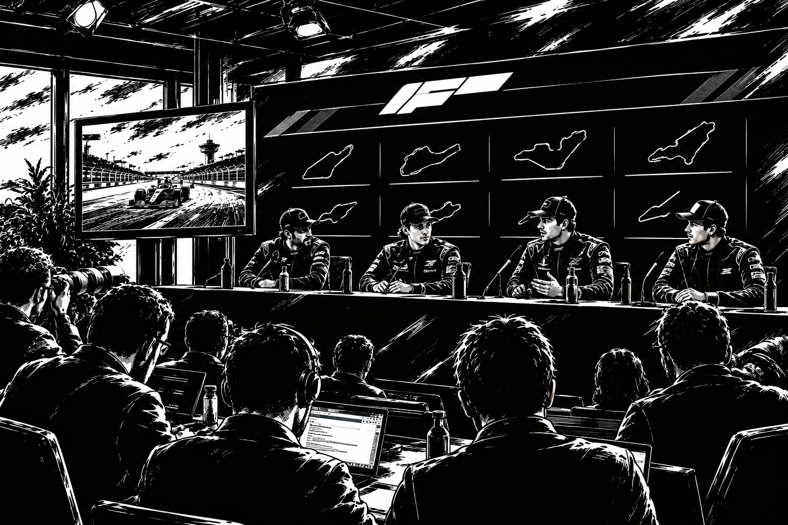
Diskutera med andra riktiga spelare i Undercut Racing Manager. Trådarna är gemensamma för alla inloggade spelare – inga AI-lag postar här.
En snabb sammanfattning av Undercut Racing Managers viktigaste tävlingsregler. Fliken Manual i huvudmenyn går igenom allt i mer detalj.
Spelet har fem nivåer: Undercut Masters League (1 grupp, 10 lag), Division 2 (2 grupper à 10 lag), Division 3 (4 grupper à 10 lag), Division 4 (8 grupper à 10 lag) och Division 5 (16 grupper à 10 lag) – totalt 310 lag. En säsong består av 10 veckor (10 race).
Upp- och nedflyttning: När säsongen är färdig flyttas i varje grupp (utom Undercut Masters League) 1:an upp till divisionen ovanför, tillsammans med divisionens bästa 2:or. I varje grupp (utom i Division 5) flyttas de 3 sämsta lagen ner till divisionen under. Antalet lag i varje grupp är alltid 10.
Veckoschema: Måndag kl 20.00 träningsrace, onsdag kl 20.00 kval, fredag kl 20.00 race, söndag kl 20.00 ekonomiuppdatering – allt sker automatiskt.
Varje race tävlar alla bilar (två per lag) individuellt om placering. De 10 bästa bilarna får poäng enligt 25-18-15-12-10-8-6-4-2-1. Lagets totalpoäng är summan av vad båda bilarna tar in. Poängen nollställs inför varje ny säsong.
Tävlingsregler mellan säsonger: Efter varje avslutad säsong halveras en av bilens fem komponenter (Däck, Motor, Aerodynamik, Växellåda, Chassi – i den ordningen) för ALLA lag i spelet, i ett rullande 5-säsongersschema. Regeln träffar aldrig Säsong 1 och tillämpas exakt en gång per säsongsnummer.
Varje lag har exakt 2 aktiva bilar med egna förare, samt upp till 10 reservförare, 10 mekaniker och 10 ingenjörer. Personal kan köpas och säljas via 7 dagar långa auktioner under fliken Marknad – du kan aldrig buda på din egen notering.
Spela schysst mot övriga lag och manipulera inte spelet på sätt det inte är avsett för. Misstänker du fusk kan du anmäla det direkt under Mitt konto → Kontakt → Anmäl fusk.
Det är endast tillåtet att ha ett lag per person. Har du fler än ett konto/lag kan spelledningen stänga av kontot.
Kontoinställningar för din Undercut Racing Manager-profil.
Användarnamn: -
Ditt spel sparas automatiskt lokalt i den här webbläsaren.
Välj vilken valuta belopp ska visas i. Spelets ekonomi är alltid densamma internt – detta styr bara hur siffrorna visas, till en fast växelkurs: 10 SEK = 1 USD = 1 EUR = 1 GBP.
Hantera vilka cookies du tillåter (nödvändiga, statistik och personliga annonser).
Du är inloggad på testkontot. Sparfilen ligger helt separerad från riktiga användares data (egen lagringsnyckel) och påverkar aldrig någon annans spel. Testkontot fick vid första inloggningen 1 000 000 000 kr samt ett redan avklarat träningsrace och en avklarad kval+race-rapport som testdata.
Testdata skapad: - | Träningsrace daterat: -
Välj ett nytt lösenord för ditt konto.
Skriv in din väns e-postadress så skickar vi en inbjudan till spelet. Registrerar sig din vän med den adressen klarar du Managerlicens-uppdraget "Värva en annan användare".
Mailet är förberett i ditt mailprogram – tryck skicka där för att slutföra.
En översikt av ditt konto och ditt lag.
Har du hittat en bugg, en idé eller en fråga? Skriv till oss så läser vi det så snart vi kan.
Meddelandet är skickat – tack!
Misstänker du att någon fuskar? Beskriv vad som hänt (gärna med lagnamn/användarnamn) så öppnas ett färdigskrivet mail till spelledningen, som du kan skicka direkt från ditt eget mailprogram.
Mailet är förberett i ditt mailprogram – tryck skicka där för att slutföra.
Hittat en bugg? Beskriv vad som hände (gärna vad du gjorde precis innan) så öppnas ett färdigskrivet mail till spelledningen, som du kan skicka direkt från ditt eget mailprogram.
Mailet är förberett i ditt mailprogram – tryck skicka där för att slutföra.
Meddelanden från Spelledningen (t.ex. vunna transfers, mästerskap och uppflyttningar) och från andra Undercut Racing Manager-spelare. Klicka på ett olöst meddelande för att markera det som läst.
Laddar…
Skicka ett meddelande till en annan spelare via deras användarnamn.
Meddelandet är skickat.
Visa en notis uppe i höger hörn för viktiga spelhändelser, t.ex. vunna auktioner, mästerskap och uppflyttningar.
Fa ett mail till adressen du registrerade dig med. Kan stangas av per typ nedan.
Det senaste som hänt ditt lag – vinster, pallplatser, poles, värvningar, sparkade personer, mästerskap och annat viktigt.
Det är helt gratis att skapa ett konto och spela Undercut Racing Manager. Som ett tack för att du provar spelet får du en Managerlicens med 10 enkla uppdrag – lös ett uppdrag och hämta 100 000 kr i belöning, helt gratis, en gång per uppdrag.
Undercut Racing Manager är ett webbläsarbaserat managerspel om racing. Du leder ett eget lag genom fyra divisioner, anställer förare, mekaniker och ingenjörer, förhandlar kontrakt, utvecklar bilarna under fliken Bilar och tävlar vecka för vecka mot AI-styrda lag.
Ny som spelare? Fliken Manual i huvudmenyn har en innehållsförteckning och en enkel genomgång av hur allt hänger ihop.
Undercut Racing Manager är utvecklat av teamet bakom Strawtown Interactive.
Alla registrerade konton. Klicka på ett användarnamn för att se Senaste aktivitet och Startdatum.
E-post: -
Startdatum: -
Senaste aktivitet: -
Status: -
Vi använder nödvändiga cookies för att spelet ska fungera, och (om du tillåter det) cookies för statistik och personligt anpassade annonser. Läs mer i vår integritetspolicy och cookiepolicy.
Välj vilka kategorier du tillåter. Du kan ändra det här när du vill under Mitt konto → Inställningar → Cookies.